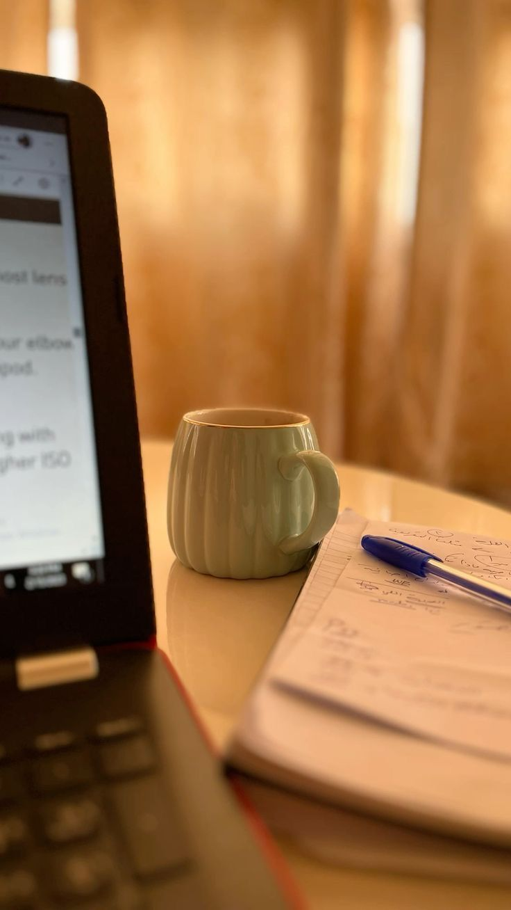
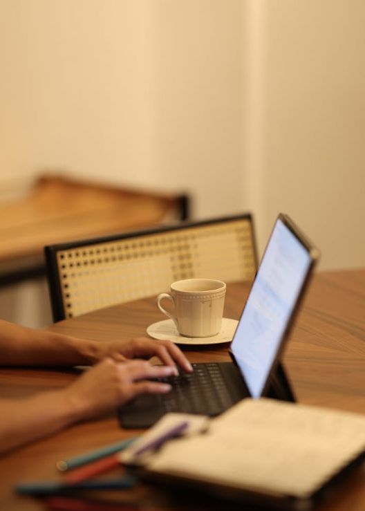

چطور نوشتن را به یک عادت روزانه تبدیل کنیم
نوشتن مهارتی است که با تمرین روزانه رشد میکند. در این مطلب یاد میگیری چطور با چند عادت ساده، نوشتن را بخشی از زندگیات کنی.
ادامه مطلب ...
نوشتن مهارتی است که با تمرین روزانه رشد میکند. در این مطلب یاد میگیری چطور با چند عادت ساده، نوشتن را بخشی از زندگیات کنی.
ادامه مطلب ...
با رعایت چند نکتهی ساده مثل تمیز نگه داشتن لپتاپ، تنظیم دمای مناسب و مدیریت شارژ باتری، میتونی دستگاهت رو سالمتر و طولانیتر نگه داری.
ادامه مطلب ...تمرکز، برنامهریزی و مدیریت زمان سه عامل کلیدی برای کار مؤثر هستند. در این مقاله یاد میگیری چطور از روز کاریات بیشترین استفاده را ببری.
ادامه مطلب ...سلام! من طاها هستم. علاقهمند به طراحی و توسعه وب. در این وبلاگ مقالات و آموزشهای خودم را به اشتراک میگذارم.
بیشتر بدانید